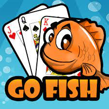
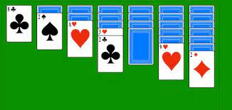

Jigsaw Puzzle
Jigsaw puzzles are a timeless and engrossing form of entertainment that captivate people of all ages, including seniors.
These puzzles consist of countless interlocking pieces that must be assembled to form a complete image, often depicting beautiful landscapes, famous landmarks, or works of art.
For the elderly, jigsaw puzzles offer a wonderful way to relax, exercise their cognitive abilities, and pass the time with a sense of accomplishment.
The process of sorting, matching, and fitting the pieces together provides a mentally stimulating and satisfying experience, making it an ideal activity for individuals seeking both mental engagement and relaxation in their leisure time.
Whether enjoyed solo or as a shared project with friends and family, jigsaw puzzles continue to be a beloved and enduring pastime that fosters creativity, concentration, and a sense of achievement.
Go Fish

Go Fish is a classic card game that's easy to learn and delightful to play.
Perfect for family gatherings or casual card game nights, it involves players attempting to collect sets of matching cards by "fishing" from one another's hands.
The game is not only a great way to pass the time but also an excellent opportunity for social interaction and friendly competition.
Its simplicity and universal appeal make Go Fish a timeless and enjoyable card game suitable for all ages, from children to the elderly, fostering connections and laughter around the table.
Solitare

Solitaire, also known as Patience, is a classic single-player card game enjoyed by individuals of all ages, including the elderly.
The game's objective varies slightly depending on the version, but it generally involves arranging a deck of shuffled cards into a specific order or pattern by following a set of rules.
Solitaire offers a solitary and relaxing way to pass the time, providing mental stimulation while requiring focus and strategic thinking.
It's a popular choice for those seeking a quiet and enjoyable card game that can be played at one's own pace, making it a timeless and satisfying pastime.